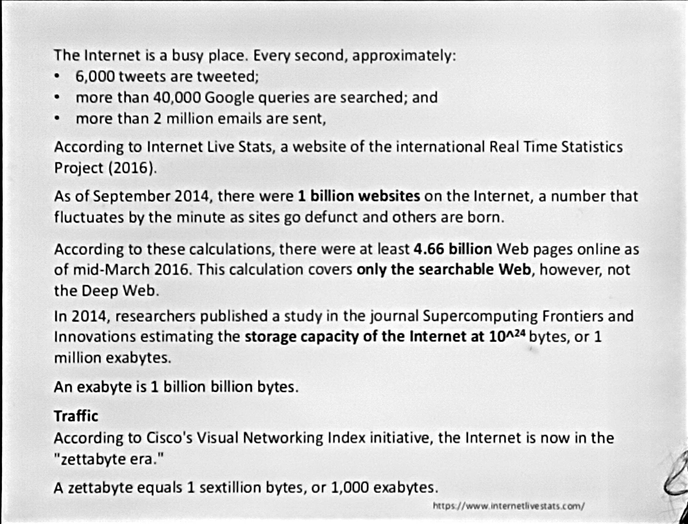
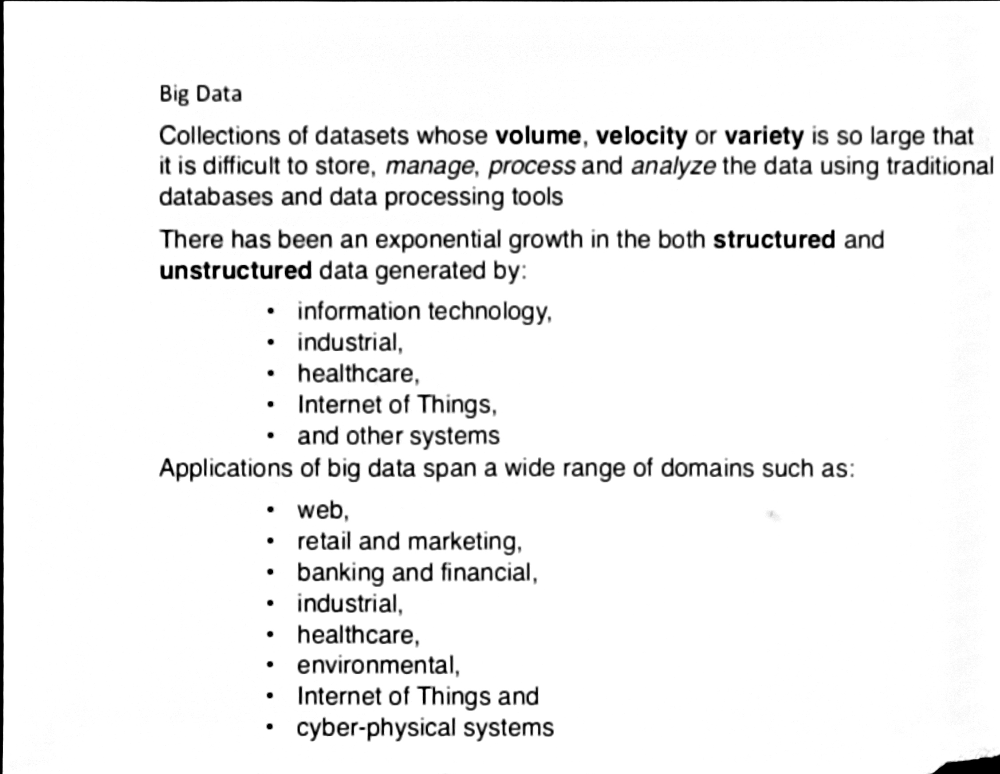
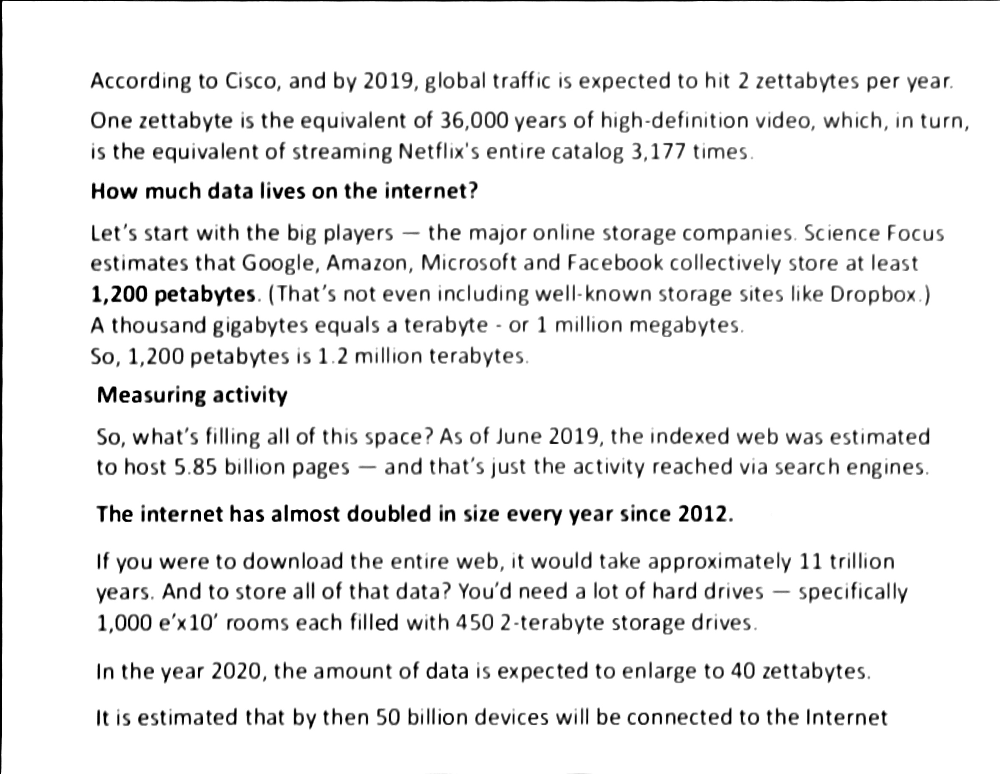

1era clase
Datos en Internet: Almacenamiento, Tráfico y Big Data
1. El Internet en Tiempo Real
El flujo de información actual supera las capacidades de procesamiento tradicionales. Según datos de Internet Live Stats, cada segundo se generan:
- Interacción Social: ~6,000 publicaciones en X (Twitter).
- Búsqueda de Información: >40,000 consultas en Google.
- Comunicación: >2,000,000 de correos electrónicos enviados.
Crecimiento y Escala de la Web
- Hitos de Sitios Web: En septiembre de 2014 se alcanzó la cifra de 1,000 millones de sitios.
- Web Indexada: Para marzo de 2016, la internet superficial contaba con 4.66 mil millones de páginas. En 2019, esta cifra ascendió a 5.85 mil millones.
- Tasa de Expansión: Desde 2012, el tamaño de la red se ha duplicado prácticamente cada año.
2. La Era del Zettabyte
Para comprender la escala del Big Data, es fundamental manejar las unidades de almacenamiento a nivel de centros de datos.
Jerarquía de Unidades
- Petabyte (PB): \(10^{15}\) bytes.
- Exabyte (EB): \(1,000\) PB o \(10^{18}\) bytes.
- Zettabyte (ZB): \(1,000\) EB o \(10^{21}\) bytes.
Nota de referencia: Un solo zettabyte equivale a 36,000 años de video en HD o a reproducir el catálogo completo de Netflix más de 3,000 veces.
Proyecciones de Datos
- Capacidad Global: En 2014, la capacidad de almacenamiento se estimaba en 1 millón de exabytes.
- Crecimiento Exponencial: Para 2020, el volumen de datos alcanzó los 40 zettabytes, impulsado por la integración de más de 50 mil millones de dispositivos conectados.
- Infraestructura de Gigantes: Empresas como Google, Amazon, Microsoft y Facebook gestionan colectivamente más de 1,200 petabytes.
3. Fundamentos de Big Data
Definición
Se refiere a conjuntos de datos cuyo volumen, velocidad o variedad son tan grandes que resulta inviable su almacenamiento, gestión o análisis mediante bases de datos relacionales o herramientas tradicionales.
Conceptos Clave
- Dato vs. Información: El dato es la unidad mínima simbólica (hecho aislado); la información es el conjunto de datos procesados que permiten la toma de decisiones.
- Categorización: * Estructurados: Tablas de bases de datos, CSV.
- No estructurados: Video, audio, logs de servidores, publicaciones en redes sociales.
4. Tecnologías de Procesamiento Distribuido
Dada la naturaleza masiva de estos datos, se requieren entornos que permitan el cómputo paralelo y distribuido:
- Apache Hadoop: Framework de código abierto diseñado para el almacenamiento (HDFS) y procesamiento (MapReduce) distribuido en clusters de hardware convencional.
- Apache Spark: Motor de procesamiento de datos optimizado para trabajar en memoria (RAM), lo que lo hace significativamente más rápido que Hadoop para análisis iterativos y algoritmos complejos.
Dominios de Aplicación
- Healthcare: Telemonitoreo y análisis de interoperabilidad clínica (HL7 FHIR).
- Finanzas: Modelos predictivos para detección de fraude.
- IoT y Sistemas Ciberfísicos: Procesamiento de flujos de datos provenientes de sensores industriales.
- Retail: Personalización masiva basada en comportamiento del usuario.
Fuentes: Cisco Visual Networking Index, Internet Live Stats, Supercomputing Frontiers and Innovations (2014).


